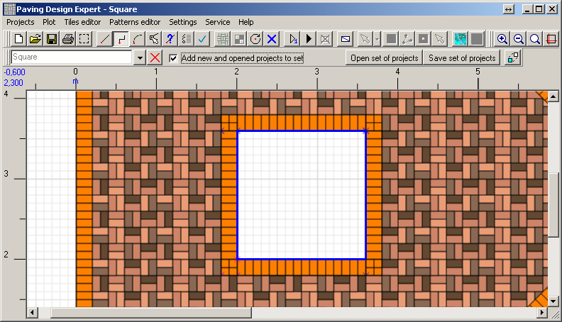
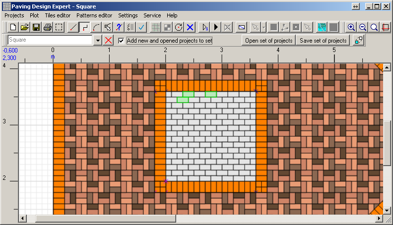
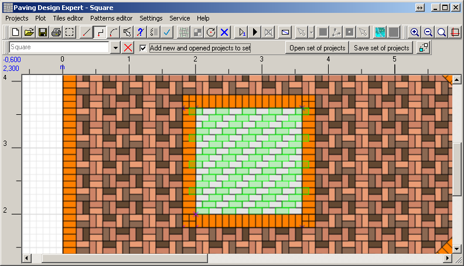
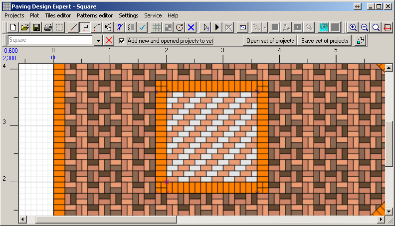
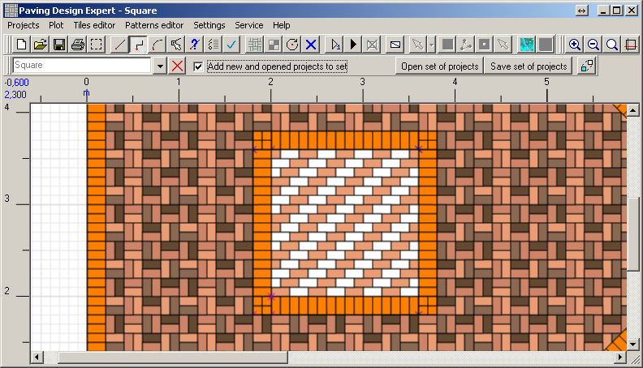
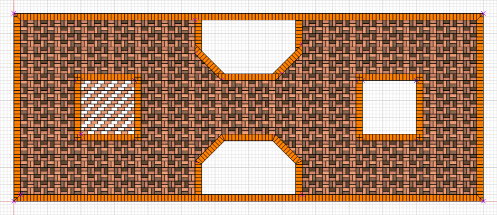
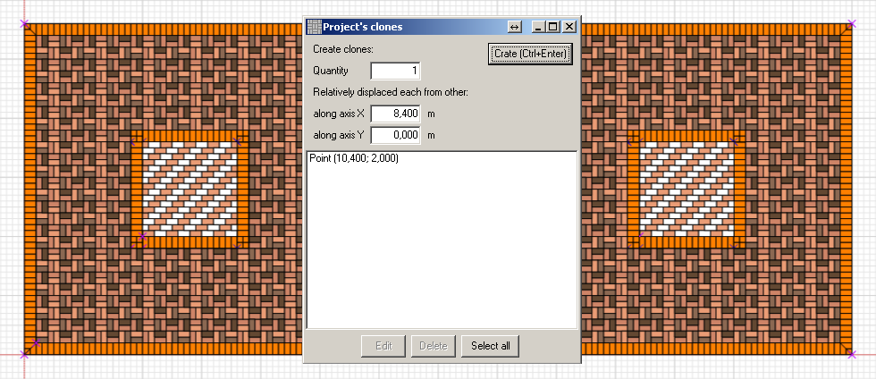

Paving Design Expert 2.2
Filling squares
Create a new project, save it under the name "Square".
In the chapter "Main space tile filling" we learnt how to draw
the boundaries of the project using the existing layout. We need to draw a square with the next
boundaries:
Draw. Choose a pattern "Wall 100x200 (simple pattern)". Set the starting point in the lower left corner and fill the tiles
in the lower left corner and fill the tiles  .
.
Color the tiles, as was described above. Remember it is a new project so before painting you need to load colors. Initial selection of tiles.
After multiplying.
After coloring.
The rest of the tiles of a square paint in white the similar way.
Now it looks like this.
Fill the second square by cloning.

Draw. Choose a pattern "Wall 100x200 (simple pattern)". Set the starting point
in the lower left corner and fill the tiles .
Color the tiles, as was described above. Remember it is a new project so before painting you need to load colors. Initial selection of tiles.

After multiplying.

After coloring.

The rest of the tiles of a square paint in white the similar way.

Now it looks like this.

Fill the second square by cloning.
